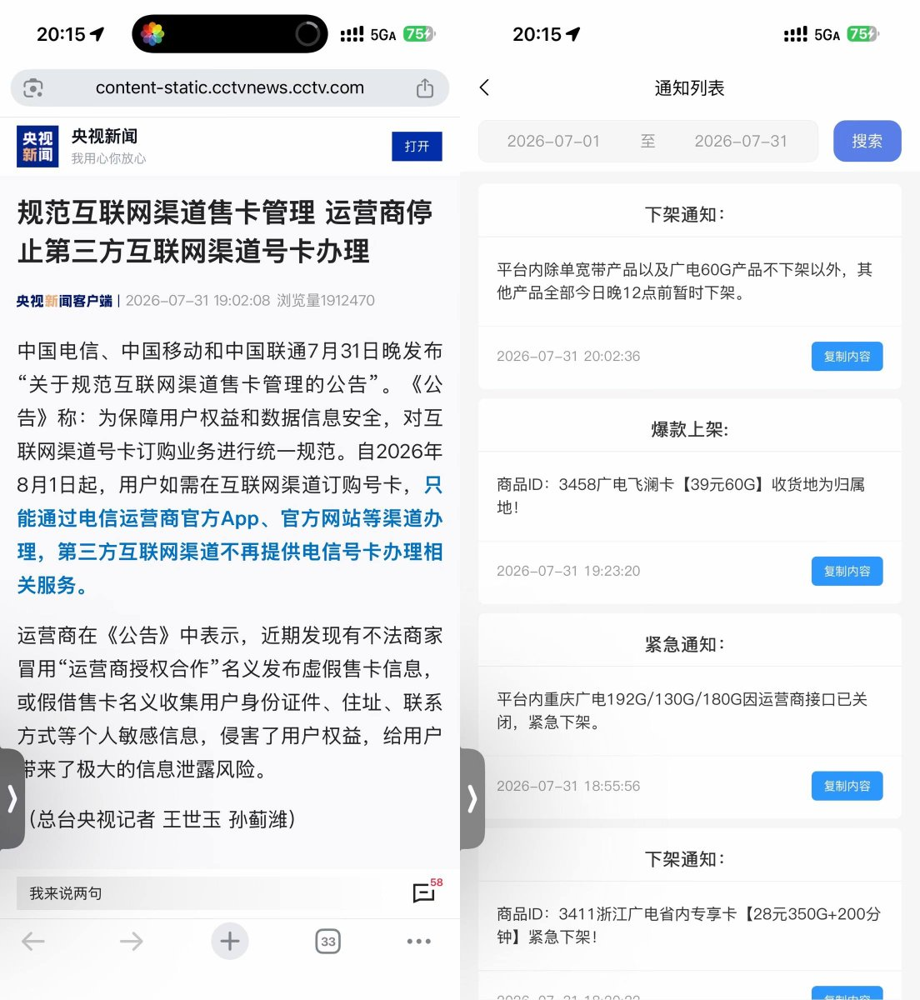

连央视新闻都报道了，看来这些第三方号卡平台是不敢上了，不排除可能有未结算佣金跑路风险。三家发的公告没说下架套餐，只说互联网套餐需要在他们家App办理，分销商也是
唯独缺了个中国广电，不过广电官网就能办了，不算第三方。原来广电不参与竞合，但是移动给限速了，也参与竞合了。若真是为你好，以后eSIM直接运营商空中发卡，而不是搞阴阳CI证书两套标准逼着国人用实体卡等着拿卡板了
我猜是卡商给的货不对版被投诉多了，集团公司肯定要规范。只有长期卡值得持有，并且需要有后备卡，有些人有了双不限就把限速卡给处理掉了，等双不限被法令制裁时，就无卡可用了。下一步，会回到五块钱三十兆流量吗？


唯独缺了个中国广电，不过广电官网就能办了，不算第三方。原来广电不参与竞合，但是移动给限速了，也参与竞合了。若真是为你好，以后eSIM直接运营商空中发卡，而不是搞阴阳CI证书两套标准逼着国人用实体卡等着拿卡板了
我猜是卡商给的货不对版被投诉多了，集团公司肯定要规范。只有长期卡值得持有，并且需要有后备卡，有些人有了双不限就把限速卡给处理掉了，等双不限被法令制裁时，就无卡可用了。下一步，会回到五块钱三十兆流量吗？

卡业联盟、172号卡全下架了，不知是月初没刷新还是代理商真的啥业务都没得吃了，172最后一个39元60G的广电也下了
记得最先搞的就是物联卡，要求上调费用，各家开始限速、限流量。这波专门推号卡的B站UP主都落得卖内裤的下场 https://t.co/OC4Z4vIlCH https://t.co/2sxU3Libkw
记得最先搞的就是物联卡，要求上调费用，各家开始限速、限流量。这波专门推号卡的B站UP主都落得卖内裤的下场 https://t.co/OC4Z4vIlCH https://t.co/2sxU3Libkw